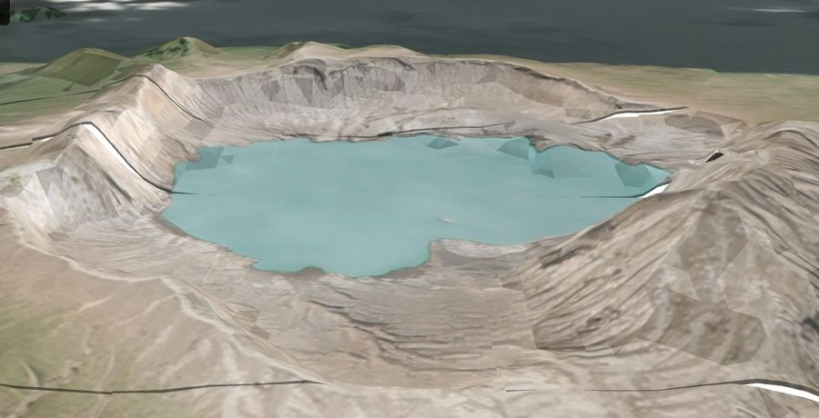

The terrain layer no free or commercial product matches — 1 m post spacing, 0.5–1 m vertical accuracy, worldwide.
Terrain is the hidden input behind flooding, erosion, drainage, line-of-sight, drill targeting and earthworks. Public DEMs (SRTM, ASTER, Copernicus) are 30 m with 5–16 m vertical error — far too coarse for parcel- or channel-scale work — and survey-grade LiDAR is expensive, episodic and unavailable for most of the world. SkySpera BaseDEM delivers 1 m post spacing (3–4 m effective) and 0.5–1 m vertical accuracy globally; independent reviewers place it within a metre, vertically, of airborne LiDAR, as a consistent worldwide product. It underpins SkySpera's flood simulation, GLOF discharge modelling, fire-cascade erosion maps and mining volumetrics.
No — 1 m is the delivered post spacing (grid). Effective terrain detail is 3–4 m; vertical accuracy is 0.5–1 m. We deliberately avoid the word "resolution" for elevation.
Tell us the ground you need to watch — we'll show you what SkySpera can do with it.
Talk to us